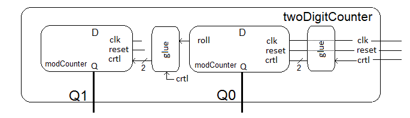

Create a two digit counter with one counter representing a least
significant digit, and the other a most significant digit. The entity
description of the two-digit counter is given by:
entity twoDigitCounter is
port( clk, reset: in STD_LOGIC;
ctrl: in STD_LOGIC;
Q1, Q0: out STD_LOGIC_VECTOR(3 downto 0));
end twoDigitCounter;
When ctrl = '1', the counters are enabled to count up as a cascade pair, and
when ctrl = '0', the counter should hold their value. By "count up as a
cascade pair", I mean that only when the least significant counter is going
to roll over, the most significant counter will count up by one.
The high-level architecture for the two-digit counter is given in the
block diagram below.

You will need two different pieces glue logic, one between the external
1-bit control input and the 2-bit control input of the least significant
counter and another piece of glue logic between the two counters.
Code this glue logic as WHEN statements in your VHDL code.
Testbench
- The testbench exercising the cascade pair should:
- Hold the least significant counter at 4 for one
clock cycle (using ctrl='0').
- Roll over the least significant counter once.
- Show clk, reset, Q1, Q0, (least significant) roll
signal, and the ctrl input to the most significant
counter.
- Remove all junk signals.
- Fit on one page.
In order to test your two-digit counter, you will need to apply a complex
test sequence to the control signal. The following VHDL code in your
testbench will help achieve this. This is CSA version of the process
structure given in section 2.2.4 of the textbook.
ctrl <= '1', '0' after 30ns, '1' after 50ns;
Check out the testbench linked at the top of lecture 4 for more details.